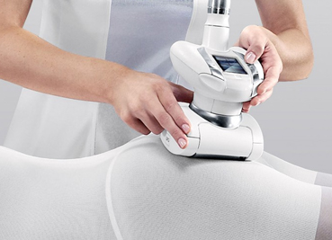

Уход за бюстом после маммопластики, компрессионное белье, реабилитация, швы после маммопластики
Вживляя инородный материал в тело, организм «наращивает» рубец вокруг него. Это нормальная реакция организма, только основная проблема для полноценного вживления имплантантов в женскую грудь. Имплантанты груди используются для зрительного увеличения груди, а их оболочка изготовлена из твердого силикона. Поверхность оболочки может быть гладкой или шероховатой на ощупь.
Поначалу, при проведении первых операций по увеличению груди с помощью имплантантов, специалисты и пациентки сталкивались с проблемой рубцов, так называемой капсулярной контрактуре. Какие бы ни использовались виды имплантантов груди, и какая бы ни была поверхность силикона, соединительная ткань, образующая рубец, становилась настолько плотной и толстой, что сдавливала имплантант и грудь становилась очень твердой. На ощупь это вполне неестественно, и с этой проблемой сталкивались почти две трети представительниц женского пола.
Вживляя инородный материал в тело, организм «наращивает» рубец вокруг него. Это нормальная реакция организма, только основная проблема для полноценного вживления имплантантов в женскую грудь. Имплантанты груди используются для зрительного увеличения груди, а их оболочка изготовлена из твердого силикона. Поверхность оболочки может быть гладкой или шероховатой на ощупь.
Поначалу, при проведении первых операций по увеличению груди с помощью имплантантов, специалисты и пациентки сталкивались с проблемой рубцов, так называемой капсулярной контрактуре. Какие бы ни использовались виды имплантантов груди, и какая бы ни была поверхность силикона, соединительная ткань, образующая рубец, становилась настолько плотной и толстой, что сдавливала имплантант и грудь становилась очень твердой. На ощупь это вполне неестественно, и с этой проблемой сталкивались почти две трети представительниц женского пола.
Подобные операции, где использовались имплантанты груди, проводились непосредственно над грудной мышцей, т.е. помещались под молочную железу. Такой большой процент возникновения рубцов заставил хирургов искать новые пути вживления, которые позволят организму принимать разные виды имплантантов груди. Так, было решено проводить операцию под большой грудной мышцей, под которой и помещали имплантант. Это привело к значительно лучшим результатам, но все равно почти треть женщин в результате жаловались на твердую грудь – результат капсулярной контрактуры.
Рекомендовано после процедурыВживляя инородный материал в тело, организм «наращивает» рубец вокруг него. Это нормальная реакция организма, только основная проблема для полноценного вживления имплантантов в женскую грудь. Имплантанты груди используются для зрительного увеличения груди, а их оболочка изготовлена из твердого силикона. Поверхность оболочки может быть гладкой или шероховатой на ощупь.
Поначалу, при проведении первых операций по увеличению груди с помощью имплантантов, специалисты и пациентки сталкивались с проблемой рубцов, так называемой капсулярной контрактуре. Какие бы ни использовались виды имплантантов груди, и какая бы ни была поверхность силикона, соединительная ткань, образующая рубец, становилась настолько плотной и толстой, что сдавливала имплантант и грудь становилась очень твердой. На ощупь это вполне неестественно, и с этой проблемой сталкивались почти две трети представительниц женского пола.
Подобные операции, где использовались имплантанты груди, проводились непосредственно над грудной мышцей, т.е. помещались под молочную железу. Такой большой процент возникновения рубцов заставил хирургов искать новые пути вживления, которые позволят организму принимать разные виды имплантантов груди. Так, было решено проводить операцию под большой грудной мышцей, под которой и помещали имплантант. Это привело к значительно лучшим результатам, но все равно почти треть женщин в результате жаловались на твердую грудь – результат капсулярной контрактуры.